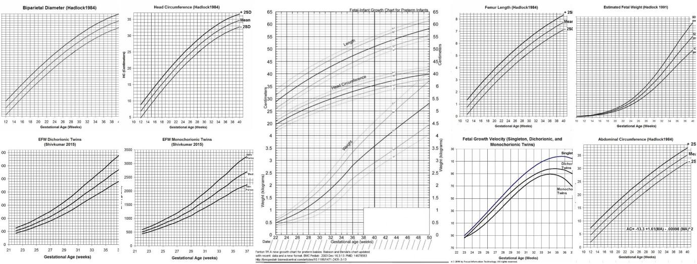

Case 2
Your next patient is a 28 year old lady who has come to you for her shared care appointment. Her OB assessment at 30 weeks of gestation was normal and FH was 29cm. Today she has come for her check at 34 weeks of gestation and her FH is 30cm.
Task:-
• Take history from the patient
• Request investigations - You will have 5 minutes for the 2 first tasks
• Explain results to the patient
• Explain the diagnosis and outcome
1. Core Concept
Two core possibilities:
- Small baby → growth restriction (IGR / IUGR / fetal growth restriction)
- Smaller amount of fluid → oligohydramnios
2. Differentials for Small for Gestational Age
Maternal causes> HALES
- Hypertension
- Antiphospholipid syndrome
- Lupus
- Substance use
- Excessive exercise (“one of the reasons we tell mother not to do heavy exercise”)
Fetal causes
- Genetic abnormalities (lecture example: “Down syndrome”)
- TORCH infections (cause both LGA & SGA)
- Renal disease / malformations (“child not producing amniotic fluid”)
Placental causes
- Placental insufficiencies
- Placental dysfunctions
Other
- Constitutional small size (“expect him to catch up”)
- Incorrect dating
3. AMC Handbook Details (Lecture Commentary)
- 4 weeks after initial examination: SFH still 29 cm.
- “Appears reduced amount of liquid” – lecturer notes odd phrasing.
- Mother:
- No smoking
- No alcohol
- No hypertension
- No previous kidney disease
- No lupus / arthritis / clots (APS feature = clots)
- No contacts with dogs/cats, no raw meat (torch)
- Fetal movements present but if asked: “less than usual.”
- Dates are certain (confirmed by ultrasound).
- No proteinuria.
- No toxoplasmosis results.
- Handbook calls case IUGR.
Handbook-listed Causes
- Genetic/karyotypic abnormalities
- Renal disease / malformations
- Pre-eclampsia
- Congenital infections (TORCH)
- Placental dysfunctions
4. Key Investigations (must mention before 5 minutes)
Essential
- Ultrasound
- CTG
- Critical errors if CTG not done.
Additional investigations mentioned
- Urea, electrolytes, creatinine
- Antiphospholipid antibodies:
- Lupus anticoagulant
- Anticardiolipin antibody
- Toxoplasmosis serology
- CMV serology
- If amniocentesis is done → karyotyping
5. What Ultrasound Assesses
- Size of baby
- Amount of amniotic fluid
- Congenital abnormalities / malformations
6. What CTG Assesses
- Well-being of the child
7. Growth Scans (Ultrasound parameters)

Parameters checked
- Fetal weight
- Head circumference
- Femur length
- Abdominal circumference
Nature of growth charts
- Not one fixed number → percentiles (5th, 10th, 90th, 95th)
- Based on gestational age
- Similar to growth charts for children
8. Diagnosis of IUGR (Lecture Criteria)
- Weight < 3rd percentile OR
- Weight < 10th percentile AND abdominal circumference < 10th percentile
Lecturer’s simplified memory cue:
- “As long as weight AND abdominal circumference are in the lower percentiles (5th/10th), you diagnose IUGR.”
Charts in exam
- They mark fetal weight and abdominal circumference on chart
- If below 10th percentile → indicates IUGR
- No need to comment on head circumference or femur length for diagnosis
9. Outcomes of Small for Gestational Age / IUGR
Short-term outcomes
- Breathing problems
- Higher risk of resuscitation
- Higher risk of hypothermia
- Feeding problems
- Higher risk of hypoglycaemia
- Higher risk of neonatal jaundice
Long-term outcomes (mentioned but advised not to emphasise)
- Neurodevelopmental issues
- Endocrine/metabolic problems (e.g., obesity)
- Cardiovascular problems
- Reproductive issues (hypospadias, puberty problems)
10. RACGP Review (Lecture Recap of Differentials)
- Incorrect dating
- Constitutionally small
- Genetic defects/malformations
- Intrauterine infections (TORCH)
- IUGR
- Maternal vascular disease (“placenta is vascular tissue—if not made properly → growth restriction”)
- Hypertensive disorders
- Autoimmune disorders
- Risk factors:
- Exercise
- Cocaine
- Smoking
- Diabetes with vascular disease (lecturer “removed it for clarity”)
11. Notes on Exam Pitfalls / Critical Errors
- Critical error if no CTG (many forget this)
- Must mention ultrasound + CTG
- Examiner may ask: “Outcome of pregnancy?” (be prepared)
HISTORY TAKING STRUCTURE
Opening
- Sit down, good open-ended question.
- Patient concern: “I’m pregnant and they told me my womb is smaller… I’m really worried.”
- Address concern:
- “I do understand your concern and how stressful this can be, but let me examine you. I’ll ask you a few questions. We’ll find the cause together and I’ll make the best management plan for you.”
- “I do understand your concern and how stressful this can be, but let me examine you. I’ll ask you a few questions. We’ll find the cause together and I’ll make the best management plan for you.”
Initial Questions
- Was this a planned pregnancy? (“Yes, it was.”)
- Late pregnancy adjustment:
- Do not congratulate a 34-week lady (“too late, too boring”).
- Ask: “How is the pregnancy going so far? Has everything been okay with your pregnancy so far?”
- Do not congratulate a 34-week lady (“too late, too boring”).
OBSTETRIC (OB) HISTORY STRUCTURE
Routine Pregnancy Assessments
- Routine blood tests at beginning of pregnancy – “Was it normal?”
- Dating scan?
- Down syndrome screening?
- Ultrasound at 18–20 weeks? Was everything normal?
- Morphology + placental scan.
- Morphology + placental scan.
- Sweet drink test at 26–28 weeks?
- Stop here (because she is 34 weeks; no need to ask GBS bug test).
- Stop here (because she is 34 weeks; no need to ask GBS bug test).
Late Pregnancy Key Questions
- Baby kicking as usual?
- “Very important, many candidates miss this.”
- “Very important, many candidates miss this.”
- Preeclampsia symptoms:
- Headache
- Swelling in legs
- (Optional: ↓ urine output or other features)
- Previous pregnancies:
- Is this your first pregnancy?
- Any complications during pregnancy?
- Any complications during delivery?
- Did you deliver a small baby? (“Even last time they told me my baby is small.”)
DIFFERENTIALS – Mnemonic: M DISC
M – Maternal medical conditions.
Ask:
- High blood pressure?
- Kidney disease?
- High blood sugar/diabetes?
- History of clots?
- Joint pain?
- Rash?
- Family history of lupus or arthritis?
(Points toward antiphospholipid/lupus spectrum.)
D – Dates
- When was your LMP?
- Are you sure about your dates?
- Were your periods regular or irregular?
I – Infections
Ask:
- Any rash or fever during pregnancy?
- Sick contacts? (Especially anyone with a rash.)
- Any pets? Any contact with animals?
- Did you eat any raw meat during pregnancy?
I – IUGR (assessment question)
Only question:
- “Did we monitor your weight gain during pregnancy? If yes, were there any concerns?”
S – Substances
- Do you smoke?
- Do you drink alcohol?
- Do you use drugs? (E.g., cocaine effect mentioned)
- Do you use any medications?
- Exercise (placed under substances).
C – Constitutional
- Family history of small babies?
- “Constitutional is a diagnosis of exclusion.”
Note: if you don't wrap up history taking earlier and ask for investigation before the examiner provides you at 5 minutes. You will fail the exam. Ask for investigation before a 5 minute timer.
INVESTIGATIONS
Top Two (Do it or fail it)
- Ultrasound / Growth scan
- Look at:
- Amniotic fluid
- Baby’s weight
- Abdominal circumference
- Head circumference
- Malformations
- Look at:
- CTG
- “Check fetal heart rate / well-being.”
- “Check fetal heart rate / well-being.”
Maternal Investigations
- Kidney function test
- Anti-cardiolipin and lupus anticoagulant antibodies
- Toxoplasmosis or CMV serology
- (Amniocentesis may be mentioned, but not mandatory)
INTERPRETING CHARTS
- Find fetal weight & abdominal circumference chart only.
- Look at percentiles (5th, 10th, 90th, 95th depending on chart).
- If mark is in lower part of chart → suggests growth restriction (IUGR).
- This confirms diagnosis.
DIAGNOSIS
Diagnosis
- “Most likely you have a condition called IUGR.”
- May start with:
- “Overall you have a condition called small for gestational age, meaning the size of your womb is smaller than expected.”
- “Overall you have a condition called small for gestational age, meaning the size of your womb is smaller than expected.”
- Most likely due to intrauterine growth restriction (newer name: fetal growth restriction).
- Simple explanation:
- “The baby is not growing and gaining weight as expected.”
- “The baby is not growing and gaining weight as expected.”
Reason for Diagnosis
- Only reason:
- Ultrasound charts showed low weight and low abdominal circumference.
- Ultrasound charts showed low weight and low abdominal circumference.
DIFFERENTIALS (Explained to Patient)
- Maternal problems:
- High blood pressure
- Kidney disease
- Lupus / antiphospholipid syndrome
- Wrong dates
- Infections: toxoplasmosis, CMV
- Substances: alcohol, drugs, smoking, excessive exercise
- Constitutional (diagnosis of exclusion) : smaller than usual baby that will catch up to its growth later on, its just little bit delayed.
OUTCOMES (If asked)
Children with growth restriction have higher risk of:
- Breathing problems → may need resuscitation
- Low body temperature (hypothermia)
- Low blood sugar
- Feeding problems
- Neonatal jaundice
Case 2
Your next patient is a 34 week pregnant lady who has presented to your general practice for a check up. Her last check was at 26 weeks of GA and she missed her further sessions.
Task:
• Take history
Physical examination findings will be given to you on a card
• Measure fundal height
• Explain diagnosis with reasons and causes
History Taking (Differences)
- After OEQ and was it planned pregnancy question, ask this.
- No empathy or congratulations needed.
- Add: “Why did you miss your previous checkups?”
- Scored as good communication (approach to patient).
- Scored as good communication (approach to patient).
OB Structure Repeated
- Routine bloods
- Dating scan
- Down syndrome screening
- 18–20 week scan
- Sweet drink test (26–28 weeks)
- Are u done with your swab test?
- Baby kicking as usual?
- Preeclampsia questions
- Previous pregnancies: complications + type of delivery
Physical Examination Card
- Findings given EXCEPT fundal height.
- Must measure fundal height on mannequin.
- Expect around 29–30 cm (reported by candidates).
Diagnosis
- Diagnosis: “Small for gestational age.”
- Reason:
- Fundal height is way less than expected (not just ±3 cm).
- Fundal height is way less than expected (not just ±3 cm).
- Causes: maternal problems, wrong dates, infections/IUGR, substances/exercise, constitutional.